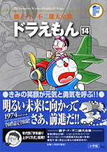

| |

定価：本体1,700円＋税
A5判／590ページ
好評発売中！
★は初めて単行本に収録される
作品です。
※収録内容は変更になる
場合があります。

|
★九かんマイク（小学一年生1981年4月号）
写真入りこみスコープ （小学一年生1981年5月号）
空気クレヨン （小学一年生1981年6月号）
おとりケース （小学一年生1981年7月号）
植物あるかせ液 （小学一年生1981年8月号）
スベールガス （小学一年生1981年9月号）
箱庭フレーム （小学一年生1981年10月号）
じゃま者をねむらせろ
（小学一年生1981年11月号）
こごとひらいしん （小学一年生1981年12月号）
おやゆび姫をおいかけろ（お話バッジ）
（小学一年生1982年1月号）
★怪物くんぼうし （小学一年生1982年2月号）
フェザープレーン （小学一年生1982年3月号）
乗りものぐつでドライブ
（小学二年生1982年4月号）
雲やきなべ （小学二年生1982年5月号）
魔法事典 （小学二年生1982年6月号）
完全しゅうせいき （小学二年生1982年7月号）
でんしょひこうき （小学二年生1982年8月号）
スネ夫のおしりがゆくえ不明
（小学二年生1982年9月号）
メンコプリンター・無敵メンコレータム
（小学二年生1982年10月号）
宇宙探検ごっこ （小学二年生1982年11月号）
★ヤメサセロボット （小学二年生1982年12月号）
十円なんでもストア （小学二年生1983年1月号）
イメージベレーぼう （小学二年生1983年2月号）
エレベート・ボタン （小学二年生1983年3月号）
かべ景色きりかえ機 （小学三年生1983年4月号）
「時」はゴウゴウと流れる
（小学三年生1983年5月号）
貸し切りチップ （小学三年生1983年6月号）
自動買いとり機 （小学三年生1983年7月号）
エスキモー・エキス （小学三年生1983年8月号）
悪魔のイジワール （小学三年生1983年9月号）
することレンズ （小学三年生1983年10月号）
空き地のジョーズ （小学三年生1983年11月号）
のぞき穴ボード （小学三年生1983年12月号） |
ペットペン （小学三年生1984年1月号）
ロッカーカッター （小学三年生1984年2月号）
巨大立体スクリーンの中へ
（小学三年生1984年3月号）
さらばキー坊 （小学四年生1984年4月号）
感覚モニター （小学四年生1984年5月号）
またもジャイアンコンサート
（小学四年生1984年6月号）
一発逆転ばくだん （小学四年生1984年7月号）
なんでもぬいぐるみに… （小学四年生1984年8月号）
スネ夫は理想のお兄さん （小学四年生1984年9月号）
自動返送荷札 （小学四年生1984年10月号）
「そんざいかん」がのぞいてる
（小学四年生1984年11月号）
シテクレジットカード （小学四年生1984年12月号）
たまごの中のしずちゃん （小学四年生1985年1月号）
断層ビジョン （小学四年生1985年2月号）
上げ下げくり （小学四年生1985年3月号）
物体変換銃 （小学五年生1985年4月号）
ふつうの男の子にもどらない
（小学五年生1985年5月号）
オバケタイマー （小学五年生1985年6月号）
のび太の0点脱出作戦 （小学五年生1985年7月号）
恐怖のたたりチンキ （小学五年生1985年8月号）
さとりヘルメット （小学五年生1985年9月号）
空中シューズ（不運は、のび太のツヨーイ味方!?）
（小学五年生1985年10月号）
リフトストック （小学五年生1985年11月号）
きらいなテストにガ〜ンバ！
（小学五年生1985年12月号）
一時あずけカード （小学五年生1986年1月号）
夜空がギンギラギン （小学五年生1986年2月号）
ずらしんぼ （小学五年生1986年3月号）
メルヘンランド入場券 （小学六年生1986年4月号）
ユメ完結チップ （小学六年生1986年5月号）
光ファイバーつた （小学六年生1986年6月号）
★コメットハンターに挑戦
（小学六年生1986年7月号）
|